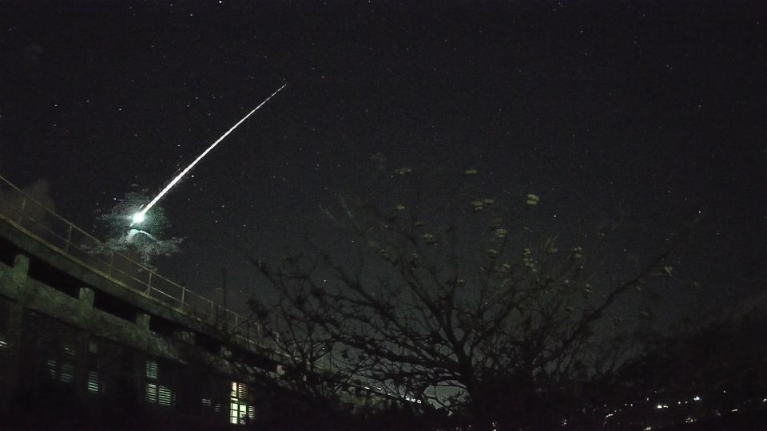

11 月 19 日（四）04:34台灣時間2026 年・世界時 2026-11-18 20:34這批裡最亮的一顆：最後爆成一大團，照亮了旁邊的雲。cam1・朝北北西持續約 1.4 秒⬇ 下載照片▶ 看影片🔗 複製這顆的連結
11 月 19 日（四）02:10台灣時間2026 年・世界時 2026-11-18 18:10很長的一條，三台攝影機都拍到，留下餘跡。cam4・朝南南西持續約 1.3 秒⬇ 下載照片▶ 看影片🔗 複製這顆的連結